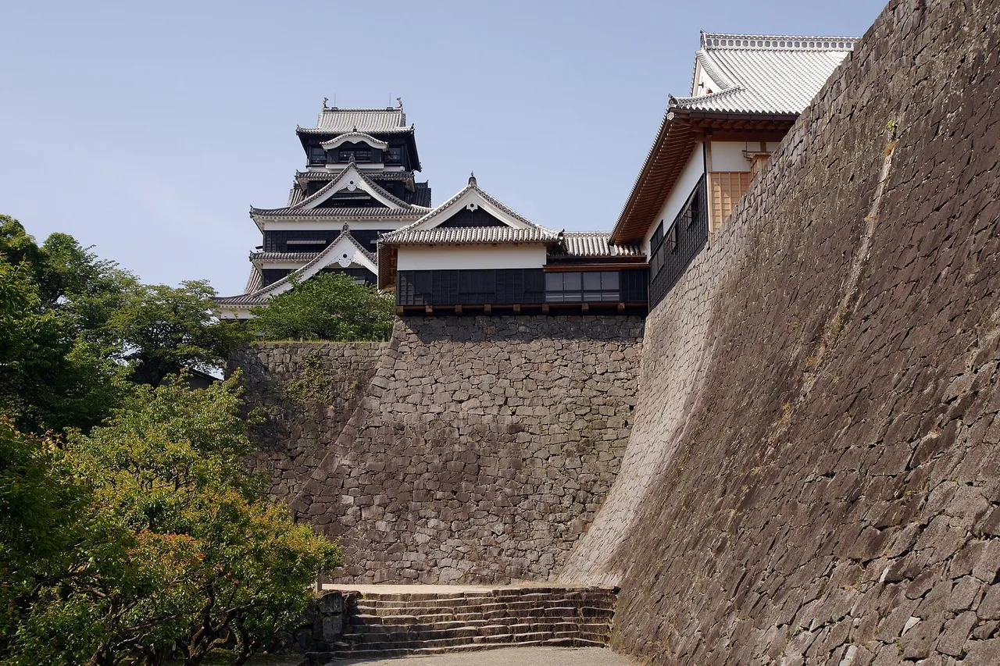

Kumamoto คู่มือท่องเที่ยวสำหรับผู้เรียนภาษาญี่ปุ่น
สรุป
Kumamoto เป็นจังหวัด Kyushu ที่กำหนดโดย ธรรมชาติ ลึก และประวัติศาสตร์ ปราสาท Kumamoto ที่อยู่อย่างสงบประมาณและได้สร้างใหม่ เป็นหนึ่ง 'สามปราสาท ใหญ่' ของญี่ปุ่น และ Mount Aso ซึ่งถือ หนึ่ง 'caldera ปะการไฟ ที่ใหญ่ที่สุดของโลก' ที่ใช้ชีวิต ชายฝั่งของจังหวัลบิด ทำให้เกาะ Amakusa ปลายมี UNESCO ลิป Hidden Christian sites และอาหารทะเลสดใหม่
📍 ชม:
Kumamoto Castle (Kumamoto-jo) · 🥢 ลอง:
Basashi (horse meat sashimi) ·
แหล่งที่มา
ปราสาทอันยิ่งใหญ่และหนึ่งในแคลเดราภูเขาไฟที่ใหญ่ที่สุดของโลกที่ Aso

Kumamoto Castle — photo by 663highland, CC BY 2.5, via Wikimedia Commons
🍜 อาหาร ▰▰▱▱▱ 🏯 วัฒนธรรม ▰▰▱▱▱ 🏙 เมือง ▰▰▰▱▱ 🚄 การเดินทาง ▰▰▰▱▱ 🌿 ธรรมชาติ ▰▱▱▱▱
🥢 ลอง: Basashi (horse meat sashimi) · 📍 ชม: Kumamoto Castle (Kumamoto-jo)
🗣 火山灰に気をつけてください。 kazan-bai ni ki wo tsukete kudasai.
ปราสาท Kumamoto ที่งดงามเป็นสัญลักษณ์ของ Kyūshū และแคลเดราวิशาลของ Mount Aso นับว่าเป็นหนึ่งในแอ่งภูเขาไฟที่ใช้งานอยู่ที่ใหญ่ที่สุดบนโลก
ต้องไปดู
★ Kumamoto Castle (Kumamoto-jo)★ Suizenji Jojuen Garden★ Mount Aso💎 Kurokawa Onsen💎 Kamishikimi Kumanoimasu Shrine
- Kumamoto Castle
- Mount Aso caldera
- Suizenji Jōjuen garden
- Kurokawa Onsen
PR วางแผนที่พัก
ลิงก์บางตัวเป็นลิงก์พันธมิตร เราอาจได้รับค่าตอบแทนโดยคุณไม่เสียค่าใช้จ่ายเพิ่ม เราแนะนำเฉพาะบริการที่เราใช้เอง
ต้องกิน
★ Basashi (horse meat sashimi)★ Karashi renkon (mustard lotus root)★ Akaushi (Aka beef / Kumamoto red Wagyu)💎 Taipien (tipien)💎 Akaushi Beef Street near Aso Shrine (Monzenmachi)
Basashi (ม้าชาร์บิ) และราเมน Kumamoto
การเดินทางและช่วงเวลาที่ดีที่สุด
การเดินทาง: Kumamoto อยู่ห่างจาก Fukuoka (Hakata) ประมาณ 40 นาทีโดย Kyūshū Shinkansen
ช่วงเวลาที่ดีที่สุด: ฤดูใบไม้ผลิถึงฤดูใบไม้ร่วงสำหรับ Aso (โปรดตรวจสอบคำแนะนำเกี่ยวกับกิจกรรมภูเขาไฟก่อนไป)
เรียนภาษาญี่ปุ่น
きれいですね。
Kirei desu ne. — "ภูเขาไฟ — Mount Aso เป็นภูเขาไฟขนาดยักษ์ของภูมิภาค"
คำท้องถิ่น
火山
kazan — ภูเขาไฟ — Mount Aso เป็นภูเขาไฟขนาดยักษ์ของภูมิภาค
💡 รู้ไว้ดีการเข้าถึง Mount Aso อาจปิดได้ทันทีเนื่องจากแก๊สภูเขาไฟ — โปรดตรวจสอบสถานะในแต่ละวันก่อน
PR วางแผนที่พัก
ลิงก์บางตัวเป็นลิงก์พันธมิตร เราอาจได้รับค่าตอบแทนโดยคุณไม่เสียค่าใช้จ่ายเพิ่ม เราแนะนำเฉพาะบริการที่เราใช้เอง